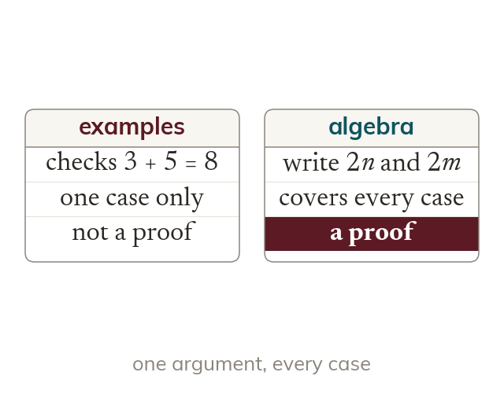

Examples are not proof
Checking numbers can show a statement is false, never that it is always true. A proof uses letters to cover every case.
Checking numbers can show a statement is false, but it can never show it is true for all numbers. A proof uses letters, so that one argument covers every case.